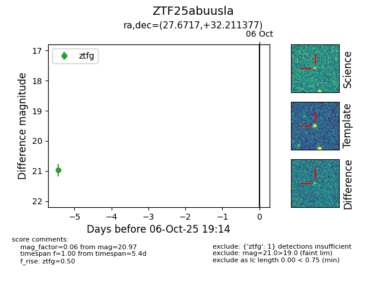

FINK: ZTF25abuusla
Lasair: ZTF25abuusla
ALeRCE: ZTF25abuusla
ZTF25abuusla (ztf,fink)
equatorial (ra, dec) = (27.6717,+32.21138)
galactic (l, b) = (137.2515,-29.00755)

last ztfg=20.97
1 ztfg detections